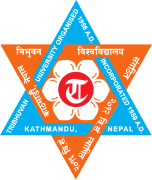

I am a dedicated undergraduate student pursuing a B.Sc. in Agriculture at IAAS, TU. My research focuses on sustainable farming practices, crop characterization, abiotic stress tolerance, and nutrient management, with the objective of enhancing resilient agriculture and food security.
My academic work spans the intersection of sustainable agriculture, climate resilience, and scientific innovation. I explore methods to optimize modern agricultural practices, including soil health management, crop adaptation strategies, and environmentally sustainable cultivation techniques.
In addition to research, I actively participate in leadership initiatives, youth-led projects, and collaborative academic endeavors. My core values include integrity, teamwork, and professional communication, ensuring meaningful contributions to both scholarly and community development.

Bachelor of Agriculture – 85.5%
Tribhuvan University, Institute of Agriculture and Animal Science (IAAS)
Lamjung Campus, Lamjung, Nepal
March 2021 – August 2025

NATIONAL EXAMINATIONS BOARD – 3.79 GPA
Sainik Awasiya Mahavidhyalaya (SAMV), Sallaghari, Bhaktapur
December 2018 – December 2020
Sustainable Agricultural Land Management
University of Florida | Agriculture | Final Grade: 93.21% | January 2024
Completed advanced modules on sustainable land management, soil conservation, and resource-efficient agricultural practices. Certificate available in gallery (Sustainable.pdf).
Data Analysis with R Programming
Google | Agriculture | Final Grade: 89.89% | August 2023
Acquired skills in data analysis, visualization, and statistical modeling using R programming, applied to agricultural datasets. Certificate available in gallery (Rprogram.pdf).
Crop Pest Diagnosis and Management Foundation Certificate
Centre for Agriculture and Bioscience International (CABI)
Gained expertise in crop pest identification, diagnostic techniques, and integrated pest management strategies. Certificates available in gallery (management.png, foundation.png).
Agriculture Research Mini Grant
Funding Agency: Champa Devi Rural Municipality | Duration: 1 Year | Grant Amount: NPR 300,000 / USD 2,196.76
Project Title: Physiological Response and Agronomic Performance of Wheat Genotypes under Drought Stress.
This research investigates the physiological responses and agronomic performance of wheat genotypes under controlled drought conditions, providing critical insights for breeding resilient crops.
Silver Jubilee MGSS Scholarship
Embassy of India, July 2020
Awarded to outstanding Nepali students based on exceptional SLC/SEE performance, supporting higher education studies.
Golden Jubilee MGSS Scholarship
Embassy of India, July 2022
Granted to 200 meritorious Nepali students annually to pursue undergraduate studies, encouraging academic excellence and India-Nepal educational collaboration.
Gandaki Provincial Scholarship
Ministry of Social Development, Youth, and Sports – July 2022
Awarded to dedicated students in Gandaki province pursuing bachelor degrees, providing full scholarship support.
University Full Merit Scholarship
Tribhuvan University, July 2020
Granted to students with the highest scores in the university-level entrance exam among 4000+ candidates, ensuring academic merit recognition.